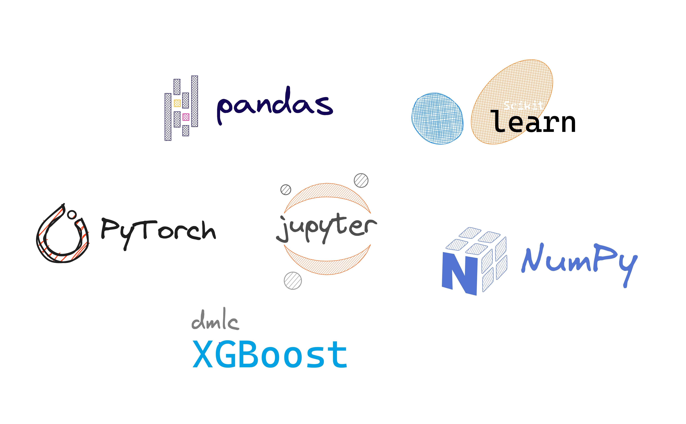

Risk Practitioner Handbook

The idea to write this handbook came to me after I started to research convenient personal knowledge management tools to keep track of my library of web links and research papers about predictive models in the financial services domain, specifically in financial risk management. I decided to focus on the most developed areas of credit risk modeling, credit scoring, but hope to extend the handbook to cover more applied use-cases.
While one may come across many books on the topic, the examples provided may often appear too high-level for practical applications. There are several reasons why financial risk as a domain of specialty is special and not easy to unlock:
Credit scoring a high-risk application of machine learning, which is governed by specific requirements surrounding model development activities. This makes the field very different from research settings where the aim is usually to maximimize accuracy or another metric of choice.
Financial data is one of the most valued assets according to this study and is one of the most expensive to obtain, which makes datasets used in modeling very specific to a lender.
Internal tools developed for credit risk require a solid data foundation that puts a strong emphasis on the quality of data and its representativeness. These topics are almost never addressed in most books and guides.
This handbook is focused on Python and its scientific ecosystem. Some years ago, many players in the banking space doubted that open-source software is going to replace their provider of choice. With Python, open-source credit risk management software is a reality, especially so in light of growing interest in large language models (LLMs) in Finance.
This handbook is an attempt to systematically collect relevant applied-focused materials that may be useful to a practitioner attempting to frame credit risk as a predictive modeling problem. Examples in the notebooks supplementing each chapter provide some examples of credit risk modeling work that can be extended to various real-world datasets.